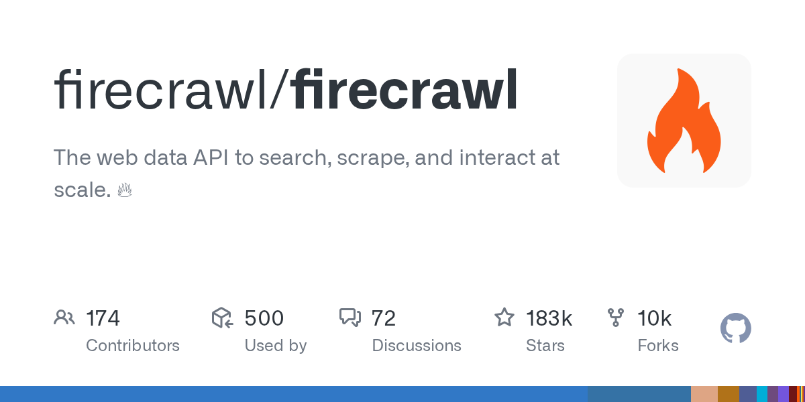

03 GitHub
firecrawl/firecrawl
웹 검색부터 본문 수집까지 한 API로
★ 183,521이번 주 +2,627TypeScriptAGPL-3.0 법무 확인릴리스 v2.11.0 (06.19)최근 활동 09.23테스트 없음예제 있음AGENTS.md 있음

웹 정보 수집은 AI 활용의 첫 단계인 경우가 많다. 문제는 웹페이지마다 구조가 달라서, 검색과 추출, 정리를 따로 붙여야 하는 경우가 많다는 점이다. 이 저장소는 그 과정을 하나의 API로 묶는 데 초점을 둔다. 만든 쪽은 오픈소스와 호스팅 서비스를 함께 제공한다고 밝혔다.
무엇을 하는 물건인가
이 서비스는 웹에서 자료를 찾고, 필요한 본문만 뽑아 정리된 형식으로 돌려준다. 사람이 브라우저 창을 여러 개 열어 검색하고 복사해 문서로 다듬던 일을 한 번에 줄여 준다. 이 도구가 없으면 검색 결과를 직접 열어 보고, 본문을 복사하고, 광고나 메뉴를 걷어내며 다시 정리해야 한다. 검색, 수집, 화면 조작을 한 도구에서 처리한다.
스펙과 도입 조건
- 언어는 TypeScript로 표시돼 있다.
- 설치 형태는 호스팅 API, CLI, MCP 서버 연결로 제시돼 있다.
- 사용하려면 Firecrawl API 키가 필요하다.
- 라이선스는 AGPL-3.0이다.
- 최신 릴리스는 v2.11.0이며 2026년 6월 19일 기준으로 공개돼 있다.
이럴 때 쓰면 좋다
- 규정 변경 모니터링 업무에서 여러 기관 사이트를 검색해 본문만 추출하고 내부 요약 모델에 넘길 때 적합하다.
- 고객 문의 대응팀이 경쟁사 수수료나 상품 안내 페이지를 주기적으로 모아 비교 표를 만들 때 쓸 만하다.
- 운영팀이 외부 공지 사이트를 순회하며 장애 안내나 점검 일정을 수집해 사내 알림으로 돌릴 때 유용하다.
핵심 기능
- 웹 검색 결과와 본문을 함께 가져오는 search를 제공한다.
- 임의의 웹페이지를 Markdown, JSON, 스크린샷 등으로 추출하는 scrape를 지원한다.
- 페이지를 연 뒤 클릭, 입력, 스크롤, 대기 같은 조작을 수행하는 interact를 제공한다.
왜 지금 주목받나
이 도구는 웹 검색, 본문 추출, 페이지 조작을 따로 붙이지 않고 한 서비스로 묶는다. 만든 쪽은 자바스크립트 비중이 큰 페이지까지 포함해 웹의 96%를 다루고, 수백만 페이지 기준 P95 지연 시간이 3.4초라고 밝혔다. 이 수치는 만든 쪽 설명이며 독립 평가 결과는 아니다. 에이전트용 기능도 강조한다. MCP 클라이언트나 여러 AI 도구에 한 번에 연결하는 방법을 함께 제시한다.
사내 도입 체크
- 외부 API를 호출한다.
- 웹페이지 내용이 외부 서비스로 전달될 수 있어 데이터 반출 검토가 필요하다.
- 만든 쪽은 firecrawl 조직 계정이다.
- 웹 수집과 브라우저 자동화 기능은 일부 상용 RPA나 웹 데이터 서비스로 대체할 수 있다.
주요 용어
스크래핑(scraping): 웹페이지에서 필요한 본문과 데이터를 추출하는 작업 Markdown: 제목·목록 같은 구조를 간단한 기호로 적는 문서 형식 JSON: 시스템끼리 데이터를 주고받을 때 많이 쓰는 구조화 형식 MCP(Model Context Protocol): AI 도구가 외부 기능과 데이터를 연결할 때 쓰는 규약
원문 정보
제목: firecrawl/firecrawl
최근 활동: 2026.09.23